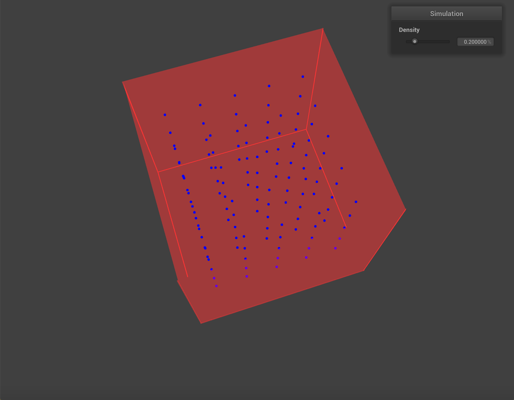

CS 184: Computer Graphics and Imaging, Spring 2019
Final Project Checkpoint: Fluid Simulation with Varying Density
Team: Ruta Joshi (26122656), Jacqueline Forsberg (26814270), Eric D’Sa (26127496)
Initializing water particles in box above a plane
Summary
Our group is working on a fluid simulation with a density control to adjust the density of
the fluid. Such a simulation would be useful for testing the effects of viscosity and vorticity
on fluids of different densities.
What We Have Accomplished
We adapted our cloth simulation code from CS 184 Project 4 to create a starting point for our fluid
simulation. Cloths and fluids differ in multiple ways, so we made the following changes:
Our cloth object is no longer a cloth. We create point masses in a 3D grid format, but we do not
create any springs, or any other connections between point masses. A cloth has particles that stick
together due to the springs that constrain their motion. In a fluid, the bonds between particles
are far less rigid, so it is more effective to model them with particle physics instead of springs.
We follow the approach of Macklin and Muller (Position Based Fluids, 2013).
In going from a 2-dimensional grid to a 3-dimensional system of point masses in a unit cube, we had
to change the spatial hashing function used to find the neighbors of a point mass. We added a depth
and num_depth_points to the Cloth object from part 4, which is what we have retrofitted to act as a fluid,
and we now split up the space into rectangular prisms (rather than squares over a fixed z value).
We needed to create a box for our fluid to live in and fall into. To do this, we added planes to a json
file with varying orientations and positions and implemented plane collisions.
We kept track of normal forces from plane collisions and applied a damping factor to model the collision
of particles with a plane. We used conservation of momentum to model an inelastic collision using classical
mechanics.
We changed our rendering for point masses and planes. Our point masses are displayed as round blue spheres,
and our planes are red squares. We do this using GLSL's shader capabilities.
We removed multiple shader controls, since we are focused on particle interactions and not on shading at
this time.
We added slider controls for density.
After making these changes, we implemented the simulation loop in the following research paper
(https://mmacklin.com/pbf_sig_preprint.pdf). The mentioned simulation loop contains checks for
constraints on a fluid, including incompressibility, tensile instability, vorticity, and viscosity.
Preliminary Results
We have multiple point masses, moving independently of each other. Our simulation has rendering changes
to better display the movement of a fluid, as well as a density control for the fluid. We have implemented
our simulation loop; however, the position function of our point masses diverges after a few time steps,
which results in large point displacements.

Water Particles in Box without lid
Water Particles enclosed in Box
Progress (Relative To Our Plan)
We had three main goals in our plan. Our progress can be summarized as the following:
Fluid Simulation: Core simulation loop for fluids is implemented.
This is mostly done, with some bugs.
Density Control: Our simulation included a density control. This
adjusts the density, but does not affect the movement of the fluid.
Particle Colorization: We have not attempted gradient colorization of particles based on the current height of
each particle. We currently have set the colors of particles based on their initial heights for debugging purposes.
We plan to finish implementing the Macklin and Muller paper and add the density and color gradient shading as originally
planned.
We referenced this paper for assistance with implementing vorticity constraints. The paper "Position
Based Fluids" (above) referenced this paper in their vorticity constraint calculations.